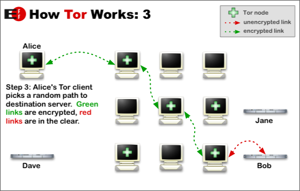
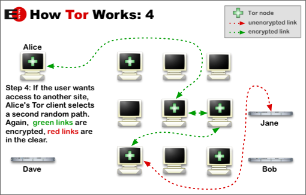

Tor: Overview
Tor is a network-within-a-network that allows people and groups to improve their privacy and security on the Internet. It also enables software developers to create new communication tools with built-in privacy features. Tor provides the foundation for a range of applications that allow organizations and individuals to share information over public networks without compromising their privacy.
Individuals can use Tor to keep remote websites from tracking them and their family members. They can also use it to connect to resources such as news sites or instant messaging services that are blocked by their local Internet service providers (ISPs).
Groups such as the German "Diabetes People" organization recommend Tor for safeguarding their members' online privacy and security. Activist groups like the Electronic Frontier Foundation (EFF) are supporting Tor's development as a mechanism for maintaining civil liberties online. Corporations are investigating Tor as a safe way to conduct competitive analysis, and are considering using Tor to test new experimental projects without associating their names with these projects. A branch of the U.S. Navy uses Tor for open source intelligence gathering, and one of its teams used Tor while deployed in the Middle East recently.
The variety of people who use Tor is actually part of what makes it so secure. Tor hides you among the other users on the network, so the more populous and diverse the user base for Tor is, the more your anonymity will be protected.
Why we need Tor
Using Tor protects you against a common form of Internet surveillance known as "traffic analysis." Traffic analysis can be used to infer who is talking to whom over a public network. Knowing the source and destination of your Internet traffic allows others to track your behavior and interests. This can impact your checkbook if, for example, an e-commerce site uses price discrimination based on your country or institution of origin. It can even threaten your job and physical safety by revealing who and where you are. For example, if you're travelling abroad and you connect to your employer's computers to check or send mail, you can inadvertently reveal your national origin and professional affiliation to anyone observing the network, even if the connection is encrypted.
How does traffic analysis work? Internet data packets have two parts: a data payload and a header used for routing. The data payload is whatever is being sent, whether that's an email message, a web page, or an audio file. Even if you encrypt the data payload of your communications, traffic analysis still reveals a great deal about what you're doing and, possibly, what you're saying. That's because it focuses on the header, which discloses source, destination, size, timing, and so on.
A basic problem for the privacy minded is that the recipient of your communications can see that you sent it by looking at headers. So can authorized intermediaries like Internet service providers, and sometimes unauthorized intermediaries as well. A very simple form of traffic analysis might involve sitting somewhere between sender and recipient on the network, looking at headers.
But there are also more powerful kinds of traffic analysis. Some attackers spy on multiple parts of the Internet and use sophisticated statistical techniques to track the communications patterns of many different organizations and individuals. Encryption does not help against these attackers, since it only hides the content of Internet traffic, not the headers.
The solution: a distributed, anonymous network
Tor helps to reduce the risks of both simple and sophisticated traffic analysis by distributing your transactions over several places on the Internet, so no single point can link you to your destination. The idea is similar to using a twisty, hard-to-follow route in order to throw off somebody who is tailing you—and then periodically erasing your footprints. Instead of taking a direct route from source to destination, data packets on the Tor network take a random pathway through several servers that cover your tracks so no observer at any single point can tell where the data came from or where it's going.


To create a private network pathway with Tor, the user's software or client incrementally builds a circuit of encrypted connections through servers on the network. The circuit is extended one hop at a time, and each server along the way knows only which server gave it data and which server it is giving data to. No individual server ever knows the complete path that a data packet has taken. The client negotiates a separate set of encryption keys for each hop along the circuit to ensure that each hop can't trace these connections as they pass through.
Once a circuit has been established, many kinds of data can be exchanged and several different sorts of software applications can be deployed over the Tor network. Because each server sees no more than one hop in the circuit, neither an eavesdropper nor a compromised server can use traffic analysis to link the connection's source and destination. Tor only works for TCP streams and can be used by any application with SOCKS support.
For efficiency, the Tor software uses the same circuit for connections that happen within the same minute or so. Later requests are given a new circuit, to keep people from linking your earlier actions to the new ones.
Hidden services
Tor also makes it possible for users to hide their locations while offering various kinds of services, such as web publishing or an instant messaging server. Using Tor "rendezvous points," other Tor users can connect to these hidden services, each without knowing the other's network identity. This hidden service functionality could allow Tor users to set up a website where people publish material without worrying about censorship. Nobody would be able to determine who was offering the site, and nobody who offered the site would know who was posting to it.
Staying anonymous
Tor can't solve all anonymity problems. It focuses only on protecting the transport of data. You need to use protocol-specific support software if you don't want the sites you visit to see your identifying information. For example, you can use web proxies such as Privoxy while web browsing to block cookies and withhold information about your browser type.
Also, to protect your anonymity, be smart. Don't provide your name or other revealing information in web forms. Be aware that, like all anonymizing networks that are fast enough for web browsing, Tor does not provide protection against end-to-end timing attacks: If your attacker can watch the traffic coming out of your computer, and also the traffic arriving at your chosen destination, he can use statistical analysis to discover that they are part of the same circuit.
The future of Tor
Providing a usable anonymizing network on the Internet today is an ongoing challenge. We want software that meets users' needs. We also want to keep the network up and running in a way that handles as many users as possible. Security and usability don't have to be at odds: As Tor's usability increases, it will attract more users, which will increase the possible sources and destinations of each communication, thus increasing security for everyone. We're making progress, but we need your help. Please consider installing a server or volunteering as a developer.
Ongoing trends in law, policy, and technology threaten anonymity as never before, undermining our ability to speak and read freely online. These trends also undermine national security and critical infrastructure by making communication among individuals, organizations, corporations, and governments more vulnerable to analysis. Each new user and server provides additional diversity, enhancing Tor's ability to put control over your security and privacy back into your hands.